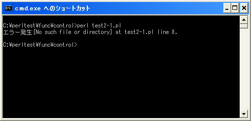

die関数
「die」関数はエラーが発生した場合にプログラムを終了させる場合に使用し、エラーメッセージを出力しPerlスクリプトを終了します。
die die([LIST])
引数に指定した値を標準エラー出力に出力し、実行しているPerlスクリプトを終 了します。 パラメータ: LIST 標準エラー出力に出力するリスト 戻り値：
1番目の引数にはエラーとして出力するリストを指定します。エラーを出力後に特殊変数「$!」に格納されているシステムエラーの番号をスタータスコードとして「exit」関数を呼び出して終了します。
もしも「$!」に格納されている値が0の場合には、特殊変数「$?」の値を使い「$>>8」の結果をスタータスコードとして使用します。さらに「$>>8」が0の場合には数値の255を使用します。
具体的には次のように記述します。
die("Error");
上記のように引数「LIST」が改行で終わらない場合には、プログラム名と行番号(及び場合によっては入力行)が自動的に表示されます。形式としては「プログラム名 line 行番号」の形式です。 例えば「Error xxx.pl line 15」のように表示されます。
行番号を表示したくない場合には次のように改行で終了して下さい。
die("Error¥n");
またステータスコードとして使用される特殊変数「$!」はシステムに対する要求を行った時に発生したエラーを保存しています。この変数は数値として扱うとエラーコードを返しますが、文字列として扱うとエラーメッセージを取得できます。
その為、「die」関数の引数の中に「$!」を含めておく事でエラーメッセージを合わせて出力させることが出来ます。
die("Error $!");
ただしシステムに対する要求が失敗した時以外で「$!」を参照しても意味のあるメッセージは含まれていませんので注意して下さい。
サンプルプログラム
では簡単なプログラムで確認して見ます。
use strict;
use warnings;
use utf8;
binmode STDIN, ':encoding(cp932)';
binmode STDOUT, ':encoding(cp932)';
binmode STDERR, ':encoding(cp932)';
open(TEST, "test.txt") or die("エラー発生[$!]");
close(TEST);
上記を「test2-1.pl」の名前で保存します(文字コードはUTF-8です)。そしてコマンドプロンプトを起動し、プログラムを保存したディレクトリに移動してから次のように実行して下さい。

ファイルを開こうとして失敗した時に「die」関数が実行されます。自動的にメッセージの最後にプログラム名と行番号が付けられています。
では今度は「die」関数の引数に指定するリストの最後に改行文字を加えてみます。
use strict;
use warnings;
use utf8;
binmode STDIN, ':encoding(cp932)';
binmode STDOUT, ':encoding(cp932)';
binmode STDERR, ':encoding(cp932)';
open(TEST, "test.txt") or die("エラー発生[$!]¥n");
close(TEST);
上記を「test2-2.pl」の名前で保存します(文字コードはUTF-8です)。そしてコマンドプロンプトを起動し、プログラムを保存したディレクトリに移動してから次のように実行して下さい。
このように改行文字が最後にある場合にはプログラム名と行番号が付けられません。
( Written by Tatsuo Ikura )

著者 / TATSUO IKURA
初心者～中級者の方を対象としたプログラミング方法や開発環境の構築の解説を行うサイトの運営を行っています。